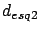
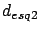

Siguiente: Modelo propuesto: Vogler-Ikegami
Subir: Modelo de Walfisch-Ikegami
Anterior: Caso NLOS
Índice General
Modelo MOPEM
El modelo de propagación para entornos urbanos de pequeñas
macroceldas (MOPEM) surge como resultado de un proyecto de fin de
carrera de estudiantes de la Facultad de Ingeniería de la
Universidad de la República [26]. Este grupo presentó un
modelo de propagación para entornos densamente urbanos en la banda
de 850 a 900 MHz tomando como escenario de medición dos zonas
urbanas de Montevideo, Pocitos y Punta Carretas.
El modelo está basado en el modelo COST231-WI anteriormente descrito
y en el análisis de rayos por difracción múltiple. Sin embargo,
revisa la hipótesis de considerar las filas de edificios como
pantallas infinitas, tomando en cuenta los cortes en las filas de
edificios en el cruce de calles. Este modelo considera la
dependencia con la orientación de la calle respecto a la dirección
de propagación, la variabilidad de la señal a lo largo de la calle
por efecto de pantallas finitas y la influencia de la altura del
terreno. Para ello, incorpora en la estimación de la atenuación la
cota del terreno, la presencia de las esquinas (que adapta la
hipótesis de pantallas infinitas en la difracción de múltiple
pantalla) como elementos significativos y la incidencia del ángulo
de orientación de la calle en la continuidad del modelo a los
efectos de aumentar la exactitud de la estimación.
Es así que expresa la atenuación como la suma de cuatro términos
independientes: la pérdida por propagación en el espacio libre
, la pérdida por difracción desde el techo del último
edificio a la calle donde se encuentra el móvil , la
pérdida por difracción multipantalla  y el término
de corrección por el mencionado efecto de levantar la
hipótesis de multipantallas infinitas.
y el término
de corrección por el mencionado efecto de levantar la
hipótesis de multipantallas infinitas.
El término
comprende la propagación en espacio libre y
es el mismo que fue considerado en la ecuación (5.12) en el
modelo de COST-WI detallado en la sección 5.3.2. Al término
que representa la pérdida desde el último edificio
difractante hasta el receptor móvil, el modelo MOPEM le agrega dos
nuevos enfoques: la consideración de la cota del terreno incluida en
la altura del móvil y el promedio de edificaciones y una nueva
función del ángulo de orientación, resultando en:
donde la función del ángulo hallada empíricamente, presenta la
siguiente formulación:
El término , modela la pérdida por difracción multipantalla,
y es ajustado empíricamente con la distancia consiguiendo una mayor
aplicabilidad del modelo MOPEM a la zona de estudio escogida durante
el desarrollo del proyecto, resultando en:
Finalmente, es un término adicional considerado como un
término de corrección por el efecto de pantallas finitas, modelando
la variación de la señal a lo largo de la cuadra.
donde  y , son las distancias desde la ubicación
del receptor a cada una de las esquinas de la calle considerada.
Esta expresión es válida para puntos que disten a más de 7 m de ambas
esquinas.
El error medio del modelo para la zona de estudio considerada en el
proyecto fue de 0 dB y la desviación estándar del mismo fue de 5.1
dB.
y , son las distancias desde la ubicación
del receptor a cada una de las esquinas de la calle considerada.
Esta expresión es válida para puntos que disten a más de 7 m de ambas
esquinas.
El error medio del modelo para la zona de estudio considerada en el
proyecto fue de 0 dB y la desviación estándar del mismo fue de 5.1
dB.
Siguiente: Modelo propuesto: Vogler-Ikegami
Subir: Modelo de Walfisch-Ikegami
Anterior: Caso NLOS
Índice General
SAPO